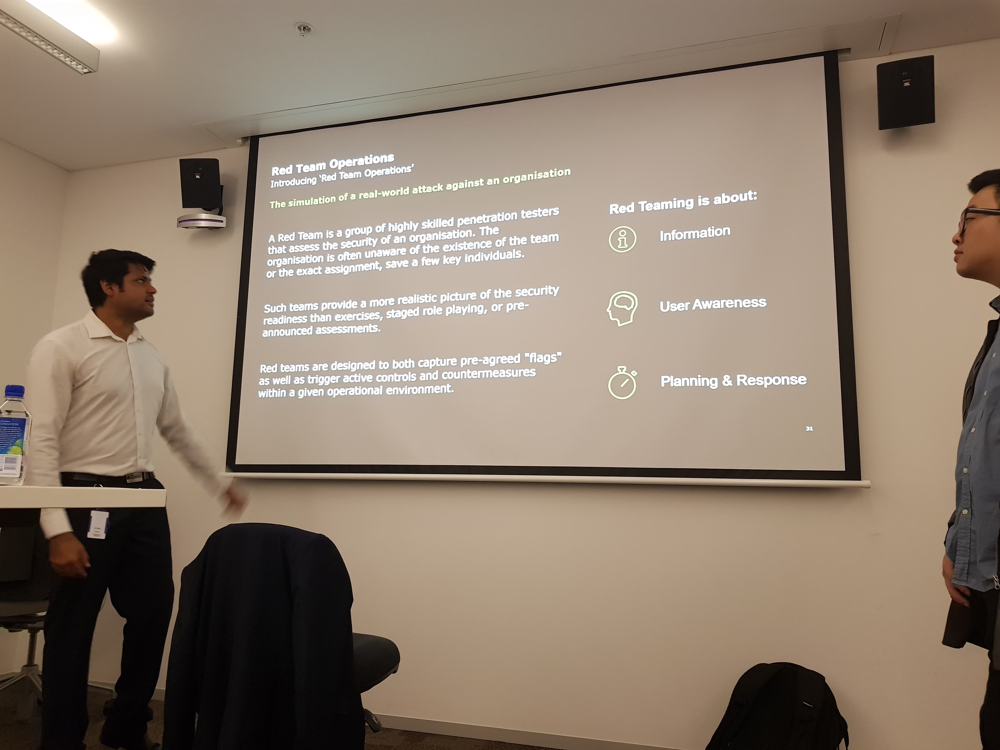

SUMMER STUDIO: SPRINT 3
SCRUM REFLECTION (SLO 5)
Scrum, a well known method to addess complex adaptive problems was introduced to us from week 1. The execution was simple, the entire class was tasked to stand and report our current progress/difficulties to people we are unfamiliar to. After 6-7 minutes, Larry would choose a random person from each group to present their scrum notes to the class.

^Scrum Notes: Notes on my peer’s progress and challenges.
The rundown for this week’s scrum:
Ian:
Participated in testing of real world applications(Bounty Programs).
Completed “Curling” from Hack The Box(HTB) and found that the part towards the end to be challenging.
Rowan:
Completing “Mr. Robot” HTB and found the privilege escalation component quite challenging.
Having trouble with the WPScan query.
Oliver:
- Completed “Fristi- Leaks” which was quite simple at first but was difficult for privilege escalation.
Andy:
Completed testing of real world applications(Bounty Programs).
Undertaking “Mr. Robot” from TryHackMe.
Found the WPScan to be ineffective for the site but used alternate method to enumerate user.
Throughout the past weeks Scrum has been a great addition to the course as it not only provided a chance to practice public speaking, but provided confidence to those who are isolated and stuck. Scrum breaks down the imaginary barriers we each built to isolate ourselves to the problems, and alters it into a collaboration effort. I am truly thankful to the educators of this course: Larry, Darsh, Jai and Luke for drilling this concept into us, as it will be the foundation of problem solving at professional work environments.
DELOITTE PRESENTATION (SLO 3)
Wednesday started off with a memorable presentation regarding Red Team operations and pentesting in general. The three presenters initally presented on the wide scope of Red Team Operations compared to the topic of penetration testing. The latter part of the presentation was hands-on, the aim was to gain root on a vulnerable virtual machine called “Piper”.

^Overview of Red Team Operations by Deloitte.
We then had a “Piper” walkthrough presented on Friday by Jai and Jason, providing great insight to the mindset when actually tackling such challenges. The walkthrough helped me significantly with my own attempt at “Mr. Robot” due to the similar method of privilege escalation.
GROUP PRESENTATION: AIRCRACK-NG (SLO 4)
- Present a case study on one or more tool(s), and how these tool(s) can be used to break into complex and vulnerable systems.
- Make sure to include examples.
- Keep it high-level.
- Presentations are to be 6 to 7 minutes. No less, no more.
- Presentations will be conducted in groups.
- Presentations will be held between 1PM and 2PM.
Similar to the first week presentation, I created a new team(Vishal, Ian, Frank and I) in Microsoft Teams as a planner for the presentation. Our topic was Aircrack-ng, a suite of tools for WiFi network security, and split the research into one major tool per person while Ian conducted the Intro and conclusion.

^Planner we used on Microsoft Teams.
My research: Aireplay
Usage:
aireplay-ng <options> <replay interface>
Included in the Aircrack-ng package, Aireplay is used to inject wireless frames. Its main purpose is to generate traffic to be used in-conjunction with Aircrack for cracking WEP and WPA Pre-Shared keys.
Different attack modes are chosen with their designated numbers:
0. Deauthenticate 1 or all stations.
1. Fake authentication with access point.
2. Interactive packet replay or injection.
3. Standard Address Resolution Protocol- request replay
4. Decrypt WEP packets without needing the key..
5. Generate valid keystream
For example, using Aireplay an attacker can deauthenticate 1 or all wireless clients connected to a particular access point, and then plant a cloned fake access point to easily sniff out all the incoming and outgoing connections.
Presentation Slides: https://docs.google.com/presentation/d/1mH4f4ga8g755NWiLRoq_wTtxcDtnLqWot66_N0-ESzY/edit?usp=sharing
Further Reading:
FOCUS OPTION 1: OWN A VULNERABLE MACHINE OF YOUR CHOICE (SLO 1 + 2 + 3)
We were given the objective of owning a vulnerable machine from the following list:
- VulnHub (see resources below)
- HTB - Retired
- Cyber Security Challenge Australia - in-a-box
- TryHackMe (one of the boxes)
- Any other boot 2 root images you find (please reach out if you are unsure)
I proceeded to undertake an intermediate challenge: “Mr. Robot” from TryHackMe.com using Kali Linux 64 bit running on my VM workstation. Acccording to the guidelines, there are a total of 3 flags that I have to obtain, with each having a clue and flag submission box.

^ Option 1 Artefact 0: Overview of the virtual machine.
Below is my attempt at gaining Root privilege:
1. First of all, setup the Mr. Robot virtual machine by connecting through the TryHackMe network using openVPN and click on the “Deploy” button to receive the machine’s IP Address.

^Option 1 Artefact 1: Network config. instructions.
2. Using the given IP address(10.0.0.73), I ran a nmap scan:
nmap -sSV -n -T4 -p1-5000 10.0.0.73

^Option 1 Artefact 2: Initial nmap scan.
3. I then applied the formatted address into the FireFox browser:

^Option 1 Artefact 3: Successful connection with the web page.
4. From the first hint, “Robots” I figured that the correct direction was to request the Robot.txt file. By the input of:
https://10.0.0.73/robots.txt in the browser.

^Option 1 Artefact 4: A dictionary file and the first flag was found!
After inputting the respective requests in the browser, https://10.0.0.73/fsocity https://10.0.0.73/key-1-of-3.txt
I received the a download option for a word list and the first flag.
5. Out of curiosity, I tried to input: https://10.0.0.73/help which resulted in an “error page not found” from Wordpress. Thus, I experimented by trying out https://10.0.0.73/login, which results in the wordpress login page.

^Option 1 Artefact 5: Exposure of wordpress login page.
6. An interesting feature on WordPress is the invalid username notification, which could be exploited to enumerate the users of the site.

^Option 1 Artefact 6.1: Invalid username notification triggered regardless of the password.
Thus after researching the context of the challenge, I compiled a list of characters in the film to try out in the username field. After around 10 minutes, I found the username: ‘Elliot’ registered on the site.

^Option 1 Artefact 6.2: Valid username notification.
7. The next step was to find the password tied to the ‘Elliot’ user, one of the option was to use the WPScan but a much more simple approach was to remove all duplicates from the dictionary file ‘fsocity.dic’.
Using the following command:
sort fsocity.dic | uniq -u > newfsocity.dic
I then found the valid password through manual input into the password field.

^Option 1 Artefact 7: Admin wordpress dashboard.
8. Next, after researching online, I came to the conclusion of editing the PHP file of the 404 page to achieve reverse shell. Elliot’s admin account proved to be very useful to perform this exploit, while a quick google search of “php reverse shell” yield many great scripts to choose from. I chose “php-reverse-shell” from Pentestmonkey as it was the first result.

^Option 1 Artefact 8: “php-reverse-shell” download page.
Following the walkthrough, the only thing that you need to change in the php-script before uploading is the throwback IP and a random port.
SUBJECT LEARNING OUTCOMES(SLOs)
There are 5 major subject learning outcomes with this course and the achievement of these outcomes will be outlined by this portfolio. The SLO’s are:
- Engage with Stakeholders to identify a problem (empathizing/ defining the problem)
- Apply Design Thinking to respond to a defined or newly identified problem
- Apply Technical skills to develop, model and/or evaluate design (refining/ test a prototype)
- Demonstrate effective collaboration and communication
- Conduct critical self and peer review and performance evaluation (both as an individual and a team)